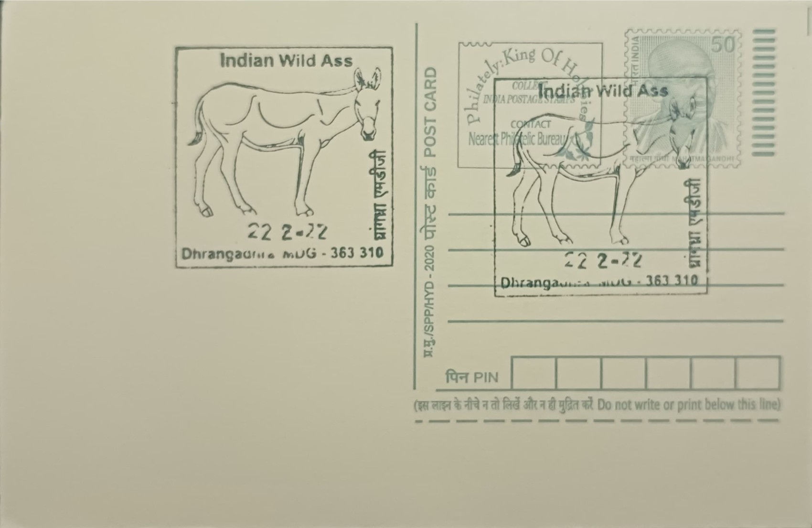

Indian Wild Ass
ભારતીય જંગલી ગધેડો


The name "ghudkhur," by which the Indian wild ass is known in Gujarati, derives from local pastoral usage describing a horse-like ass, and it distinguishes the animal from the domestic donkey found throughout the surrounding Kutch region. The subspecies Equus hemionus khur belongs to the onager group of Asiatic wild asses, whose broader range once stretched from the Middle East across Iran, Baluchistan, and the Thar into northwestern India. Today the khur survives as a single wild population confined almost entirely to the Little Rann of Kutch in Surendranagar district, a status that makes it both India's sole extant wild equid population and among the most range-restricted large mammals on the subcontinent.
The species holds particular ecological and institutional significance as the namesake and principal conservation object of the Indian Wild Ass Sanctuary, formally notified in 1972-73 under the Wildlife (Protection) Act and spanning roughly 4,954 square kilometres of saline desert, making it one of the largest wildlife sanctuaries in India by area. The sanctuary's creation was a direct response to the khur's precipitous decline, and the animal is classified as Near Threatened by the IUCN, with its single-population status underscoring the stakes of continued protection within this one landscape. Its presence also anchors the identity of the Little Rann as a distinct ecosystem rather than mere wasteland, recognised as an Important Bird Area and Key Biodiversity Area alongside its equid population.
Population data gathered since the mid-20th century illustrate the scale of the recovery under sanctuary protection: numbers are estimated to have stood at 3,000 to 4,000 animals around 1946, before collapsing to only a few hundred by 1963 amid a severe equine disease outbreak compounded by habitat pressure. Following the 1972 notification and subsequent management, census figures climbed from about 720 in 1976 to roughly 2,940 by 1998, and quinquennial censuses conducted by the Gujarat Forest Department since have generally recorded several thousand individuals, reflecting one of India's more successful single-species recoveries. Physically, the khur stands out among equids for its speed, capable of sustained gallops exceeding 70 km/h across the hard salt-encrusted plains, an adaptation suited to a habitat offering little cover from predators.
A defining pressure on the sanctuary's integrity has been the spread of commercial salt-panning and the invasive mesquite shrub Prosopis chilensis (locally gando baval), both of which have fragmented the khur's grazing grounds within the Rann even as the animal's own numbers have grown. The sanctuary's unusual geography compounds this challenge: much of the designated area becomes a shallow, water-logged wetland during the monsoon, forcing the wild ass herds onto slightly elevated islands known locally as bets, while the dry season restores the vast white expanse of hardened salt flats across which the animals are most visibly observed by visitors.
Management of the sanctuary rests with the Gujarat Forest Department, which conducts the periodic wild ass population census and oversees permit-based jeep safaris operating out of nearby villages such as Dhrangadhra and Zainabad that have become the primary mode by which tourists and researchers observe the khur in its natural setting. The Dhrangadhra post office's proximity to the sanctuary situates it within the small cluster of towns serving as gateways for this wildlife circuit, which today functions as a modest but steady contributor to the local economy alongside the salt and agricultural work that dominates the region.
| Date of Introduction | October 14, 2010 |
|---|---|
| Address | Sub Postmaster, |
| Dhrangadhra MDG-SO, | |
| Surendranagar (dt.), Gujarat - 363310. |